1. WHEAT / 1. गेहूं
 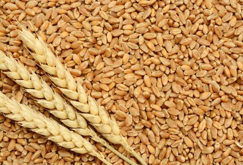
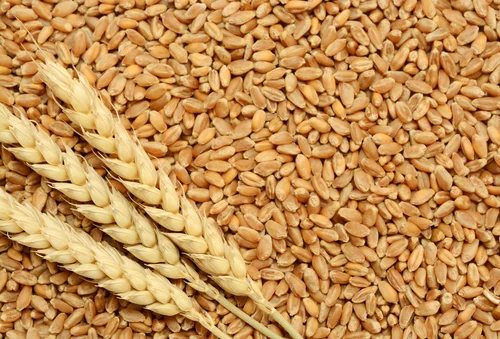
Wheat in Bihar is predominantly grown during the Rabi season, spanning from November to April. The state
holds a significant market share in neighboring states like Jharkhand and Uttar Pradesh. Wheat thrives
in well-drained loamy soils with good fertility, making Bihar's fertile Gangetic plains ideal.
Cultivation demands moderate resources, with farmers typically investing in seeds, fertilizers, and
irrigation. Timely sowing, proper irrigation, and balanced fertilizer application contribute to
successful cultivation. Bihar's wheat production caters to local demand and also supplies states with
high consumption rates like Uttar Pradesh, ensuring a steady market and sustained demand.
बिहार में गेहूं मुख्य रूप से नवंबर से अप्रैल तक रबी सीजन के दौरान उगाया जाता है। राज्य झारखंड और उत्तर
प्रदेश जैसे पड़ोसी राज्यों में महत्वपूर्ण बाजार हिस्सेदारी रखता है। गेहूं अच्छी जल निकासी वाली अच्छी
उर्वरता वाली दोमट मिट्टी में पनपता है, जो बिहार के उपजाऊ गंगा के मैदानों को आदर्श बनाता है। खेती के लिए
मध्यम संसाधनों की आवश्यकता होती है, किसान आमतौर पर बीज, उर्वरक और सिंचाई में निवेश करते हैं। समय पर
बुआई, उचित सिंचाई और संतुलित उर्वरक प्रयोग सफल खेती में योगदान करते हैं। बिहार का गेहूं उत्पादन स्थानीय
मांग को पूरा करता है और उत्तर प्रदेश जैसे उच्च खपत दर वाले राज्यों को भी आपूर्ति करता है, जिससे स्थिर
बाजार और निरंतर मांग सुनिश्चित होती है।
2. RICE / 2. चावल


Rice cultivation in Bihar occurs primarily during the Kharif season, from June to November. The state's
market share extends to neighboring states such as Jharkhand and West Bengal. Well-irrigated alluvial
soils, abundant in Bihar, provide an ideal environment for rice cultivation. The crop requires
substantial resources, including water for flooding, seeds, and fertilizers. Successful cultivation
involves precise water management and nutrient application. Bihar's rice production not only fulfills
local consumption but also caters to the demand in neighboring states like West Bengal, where rice is a
dietary staple, ensuring a consistent market presence and sustained demand.
बिहार में चावल की खेती मुख्य रूप से ख़रीफ़ सीज़न के दौरान, जून से नवंबर तक होती है। राज्य की बाजार
हिस्सेदारी झारखंड और पश्चिम बंगाल जैसे पड़ोसी राज्यों तक फैली हुई है। बिहार में प्रचुर मात्रा में सिंचित
जलोढ़ मिट्टी चावल की खेती के लिए आदर्श वातावरण प्रदान करती है। फसल के लिए पर्याप्त संसाधनों की आवश्यकता
होती है, जिसमें बाढ़ के लिए पानी, बीज और उर्वरक शामिल हैं। सफल खेती में सटीक जल प्रबंधन और पोषक तत्वों
का अनुप्रयोग शामिल है। बिहार का चावल उत्पादन न केवल स्थानीय खपत को पूरा करता है, बल्कि पश्चिम बंगाल जैसे
पड़ोसी राज्यों की मांग को भी पूरा करता है, जहां चावल एक आहार प्रधान है, जो लगातार बाजार में उपस्थिति और
निरंतर मांग सुनिश्चित करता है।
3. MAIZE / 3. मक्के
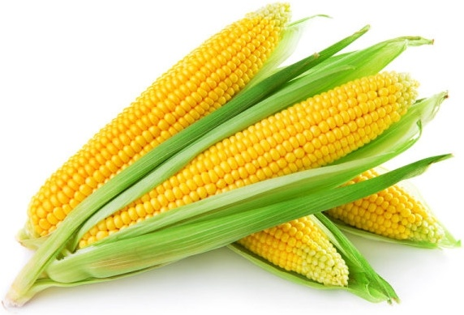
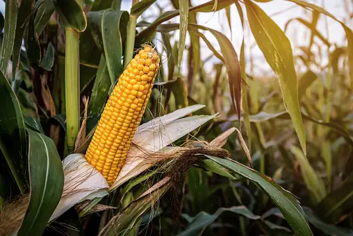
Maize cultivation in Bihar primarily takes place during the Kharif season, spanning from June to
November. The state's maize production holds a significant market share in neighboring states such as
Jharkhand and Uttar Pradesh. Maize thrives in well-drained soils with good organic content, making the
fertile plains of Bihar suitable. The cultivation of maize requires moderate resources, including seeds,
fertilizers, and adequate irrigation. Timely sowing and balanced nutrient application contribute to
successful cultivation. Bihar's maize output not only meets local demand but also supplies the
high-demand regions of neighboring states, ensuring a consistent market presence and sustained demand
for this versatile crop.
बिहार में मक्के की खेती मुख्य रूप से ख़रीफ़ सीज़न के दौरान होती है, जो जून से नवंबर तक चलती है। राज्य का
मक्का उत्पादन झारखंड और उत्तर प्रदेश जैसे पड़ोसी राज्यों में महत्वपूर्ण बाजार हिस्सेदारी रखता है। मक्का
अच्छी जैविक सामग्री वाली अच्छी जल निकासी वाली मिट्टी में पनपता है, जो बिहार के उपजाऊ मैदानों को उपयुक्त
बनाता है। मक्के की खेती के लिए बीज, उर्वरक और पर्याप्त सिंचाई सहित मध्यम संसाधनों की आवश्यकता होती है।
समय पर बुआई और संतुलित पोषक तत्वों का प्रयोग सफल खेती में योगदान देता है। बिहार का मक्का उत्पादन न केवल
स्थानीय मांग को पूरा करता है, बल्कि पड़ोसी राज्यों के उच्च मांग वाले क्षेत्रों को भी आपूर्ति करता है,
जिससे इस बहुमुखी फसल की निरंतर बाजार उपस्थिति और निरंतर मांग सुनिश्चित होती है।
4. LENTILS / 4. मसूर
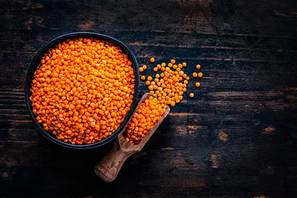
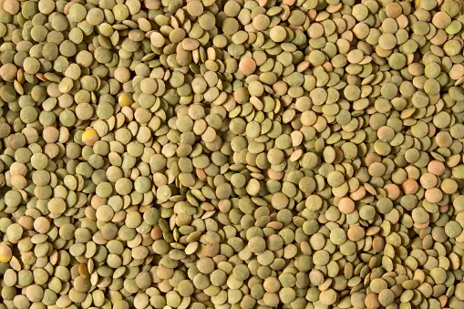
Lentil cultivation in Bihar typically occurs during the Rabi season, from October to March. The state's
lentil production contributes to its market share in neighboring regions, including Jharkhand and Uttar
Pradesh. Lentils thrive in well-drained loamy soils with good fertility, which are prevalent in Bihar.
The cultivation of lentils requires moderate resources, including seeds, fertilizers, and appropriate
irrigation. Successful cultivation involves timely planting and careful management of water and
nutrients. Bihar's lentil production not only caters to local consumption but also meets the demand in
neighboring states, ensuring a consistent market presence and sustained interest in this essential pulse
crop.
बिहार में मसूर की खेती आम तौर पर रबी मौसम के दौरान अक्टूबर से मार्च तक होती है। राज्य का मसूर उत्पादन
झारखंड और उत्तर प्रदेश सहित पड़ोसी क्षेत्रों में इसकी बाजार हिस्सेदारी में योगदान देता है। मसूर अच्छी जल
निकासी वाली अच्छी उर्वरता वाली दोमट मिट्टी में पनपती है, जो बिहार में प्रचलित है। मसूर की खेती के लिए
बीज, उर्वरक और उचित सिंचाई सहित मध्यम संसाधनों की आवश्यकता होती है। सफल खेती में समय पर रोपण और पानी और
पोषक तत्वों का सावधानीपूर्वक प्रबंधन शामिल है। बिहार का मसूर उत्पादन न केवल स्थानीय खपत को पूरा करता है,
बल्कि पड़ोसी राज्यों में मांग को भी पूरा करता है, जिससे बाजार में लगातार उपस्थिति और इस आवश्यक दलहन फसल
में निरंतर रुचि सुनिश्चित होती है।
5. MUSTARD / 5. सरसों
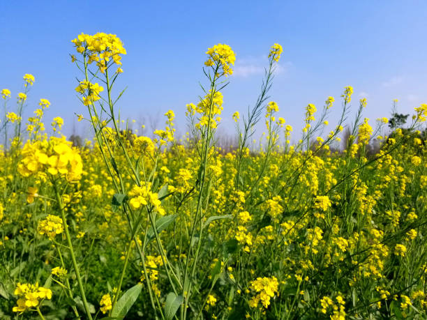
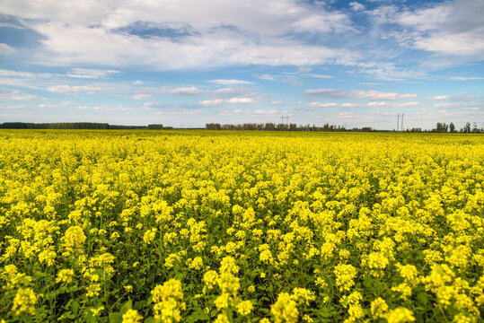
Mustard is predominantly cultivated in Bihar during the Rabi season, which occurs from November to
April. The state's mustard production holds a significant market share in neighboring regions, including
Jharkhand and West Bengal. Mustard plants thrive in well-drained soils with good fertility, such as
loamy and clayey soils found in Bihar. Cultivation demands moderate resources, including quality seeds,
fertilizers, and proper irrigation. Timely sowing and appropriate nutrient management contribute to
successful mustard cultivation. Bihar's mustard output not only meets local demand but also supplies
neighboring states, ensuring a consistent market presence and sustained demand for this versatile
oilseed crop.
बिहार में सरसों की खेती मुख्य रूप से रबी सीज़न के दौरान की जाती है, जो नवंबर से अप्रैल तक होती है। राज्य
का सरसों उत्पादन झारखंड और पश्चिम बंगाल सहित पड़ोसी क्षेत्रों में महत्वपूर्ण बाजार हिस्सेदारी रखता है।
सरसों के पौधे अच्छी जल निकासी वाली अच्छी उर्वरता वाली मिट्टी में पनपते हैं, जैसे बिहार में पाई जाने वाली
दोमट और चिकनी मिट्टी। खेती के लिए मध्यम संसाधनों की आवश्यकता होती है, जिसमें गुणवत्तापूर्ण बीज, उर्वरक
और उचित सिंचाई शामिल हैं। समय पर बुआई और उचित पोषक तत्व प्रबंधन सरसों की सफल खेती में योगदान देता है।
बिहार का सरसों उत्पादन न केवल स्थानीय मांग को पूरा करता है, बल्कि पड़ोसी राज्यों को भी आपूर्ति करता है,
जिससे इस बहुमुखी तिलहन फसल की निरंतर बाजार उपस्थिति और निरंतर मांग सुनिश्चित होती है।
6. SUGARCANE / 6. गन्ना
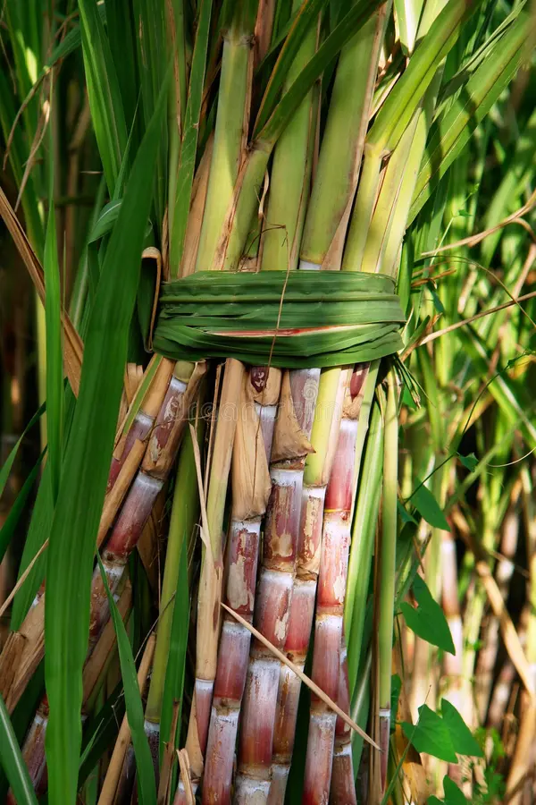
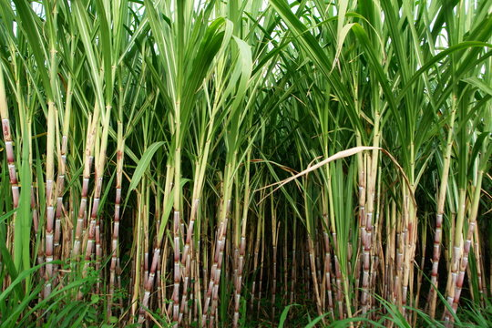
Sugarcane in Assam is primarily grown during the pre-monsoon and monsoon seasons, from October to March,
with harvesting typically taking place from January to May.
Assam contributes to India's sugarcane production, and its sugarcane is used for both local consumption
and sugar production, with a share in the national market. However, states like Uttar Pradesh,
Maharashtra, and Karnataka are major players in India's sugarcane cultivation and sugar production.
Sugarcane thrives in well-drained, fertile soils, and Assam's riverine plains provide suitable
conditions for cultivation.
Sugarcane cultivation requires substantial resources, including land preparation, planting, irrigation,
and harvesting. The crop has a growth cycle of about 10 to 12 months.
The demand for sugarcane is high in states with a well-established sugar industry, such as Uttar
Pradesh, Maharashtra, and Karnataka.
असम में गन्ना मुख्य रूप से प्री-मॉनसून और मॉनसून सीज़न के दौरान अक्टूबर से मार्च तक उगाया जाता है, जिसकी
कटाई आमतौर पर जनवरी से मई तक होती है।
असम भारत के गन्ना उत्पादन में योगदान देता है, और इसके गन्ने का उपयोग राष्ट्रीय बाजार में हिस्सेदारी के
साथ स्थानीय खपत और चीनी उत्पादन दोनों के लिए किया जाता है। हालाँकि, उत्तर प्रदेश, महाराष्ट्र और कर्नाटक
जैसे राज्य भारत की गन्ने की खेती और चीनी उत्पादन में प्रमुख खिलाड़ी हैं।
गन्ना अच्छी तरह से सूखा, उपजाऊ मिट्टी में उगता है, और असम के नदी के मैदान खेती के लिए उपयुक्त
परिस्थितियाँ प्रदान करते हैं।
गन्ने की खेती के लिए भूमि की तैयारी, रोपण, सिंचाई और कटाई सहित पर्याप्त संसाधनों की आवश्यकता होती है।
फसल का विकास चक्र लगभग 10 से 12 महीने का होता है।
उत्तर प्रदेश, महाराष्ट्र और कर्नाटक जैसे अच्छी तरह से स्थापित चीनी उद्योग वाले राज्यों में गन्ने की मांग
अधिक है।
7. JUTE / 7. जूट
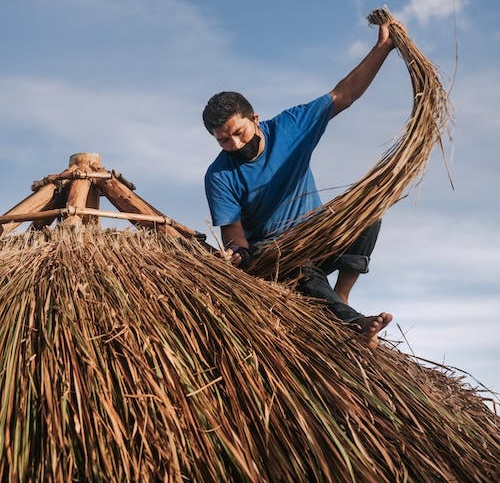
Jute cultivation in Bihar primarily takes place during the Kharif season, spanning from June to
November. The state's jute production contributes to its market share in neighboring regions,
particularly West Bengal. Jute plants thrive in well-drained, fertile soils with high humidity, making
the Gangetic plains of Bihar suitable. Cultivation demands moderate resources, including quality jute
seeds, fertilizers, and consistent irrigation. Timely planting and proper pest control contribute to
successful jute cultivation. Bihar's jute output not only meets local demand but also supplements the
supply to neighboring states, particularly West Bengal, ensuring a stable market presence and sustained
demand for this versatile fiber crop.
बिहार में जूट की खेती मुख्य रूप से ख़रीफ़ सीज़न के दौरान होती है, जो जून से नवंबर तक चलती है। राज्य का
जूट उत्पादन पड़ोसी क्षेत्रों, विशेषकर पश्चिम बंगाल में इसकी बाजार हिस्सेदारी में योगदान देता है। जूट के
पौधे अच्छी जल निकासी वाली, उच्च आर्द्रता वाली उपजाऊ मिट्टी में पनपते हैं, जो बिहार के गंगा के मैदानों को
उपयुक्त बनाते हैं। खेती के लिए मध्यम संसाधनों की आवश्यकता होती है, जिसमें गुणवत्तापूर्ण जूट के बीज,
उर्वरक और लगातार सिंचाई शामिल हैं। समय पर रोपण और उचित कीट नियंत्रण जूट की सफल खेती में योगदान करते हैं।
बिहार का जूट उत्पादन न केवल स्थानीय मांग को पूरा करता है, बल्कि पड़ोसी राज्यों, विशेष रूप से पश्चिम
बंगाल को आपूर्ति भी करता है, जिससे इस बहुमुखी फाइबर फसल की स्थिर बाजार उपस्थिति और निरंतर मांग सुनिश्चित
होती है।
8. CHICKPEAS / 8. चने
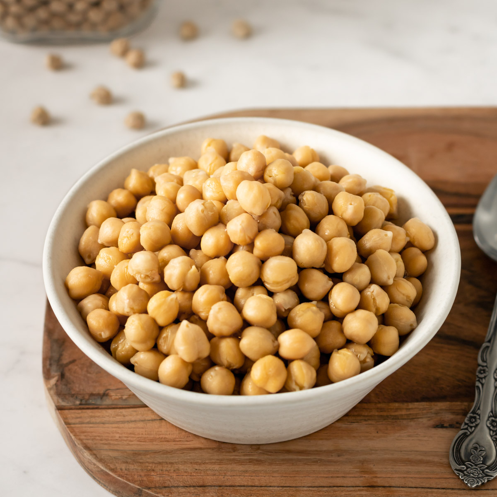
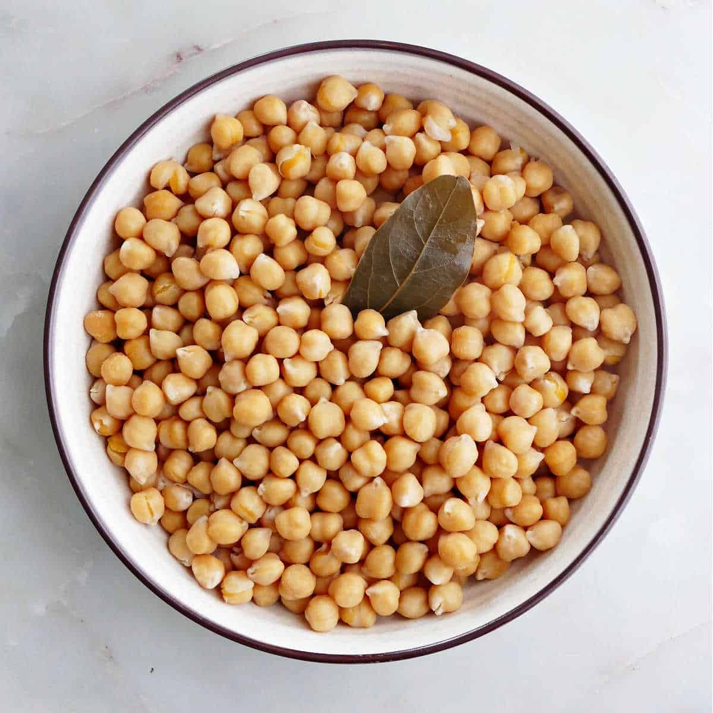
Chickpea cultivation in Bihar predominantly occurs during the Rabi season, from October to March. The
state's chickpea production contributes significantly to its market share in neighboring states like
Jharkhand and Uttar Pradesh. Chickpeas thrive in well-drained, sandy loam soils, which are commonly
found in Bihar. Cultivation requires moderate resources, including quality seeds, fertilizers, and
appropriate irrigation. Timely sowing and balanced nutrient application are crucial for successful
chickpea cultivation. Bihar's chickpea output not only meets local demand but also supplies neighboring
regions, ensuring a consistent market presence and sustained demand for this essential pulse crop,
widely used in various culinary applications.
बिहार में चने की खेती मुख्य रूप से रबी मौसम के दौरान अक्टूबर से मार्च तक होती है।
राज्य का चना उत्पादन पड़ोसी राज्यों जैसे बाजार हिस्सेदारी में महत्वपूर्ण योगदान देता है
झारखंड और उत्तर प्रदेश. चने अच्छी जल निकासी वाली, रेतीली दोमट मिट्टी में पनपते हैं, जो आमतौर पर होती है
बिहार में पाया जाता है. खेती के लिए मध्यम संसाधनों की आवश्यकता होती है, जिसमें गुणवत्तापूर्ण बीज, उर्वरक आदि शामिल हैं
उचित सिंचाई. सफल होने के लिए समय पर बुआई और संतुलित पोषक तत्वों का प्रयोग महत्वपूर्ण है
चने की खेती. बिहार का चना उत्पादन न केवल स्थानीय मांग को पूरा करता है बल्कि पड़ोसी देशों को भी आपूर्ति करता है
क्षेत्र, इस आवश्यक दलहन फसल के लिए निरंतर बाजार उपस्थिति और निरंतर मांग सुनिश्चित करना,
विभिन्न पाक अनुप्रयोगों में व्यापक रूप से उपयोग किया जाता है।
9. CUMIN / 9. जीरे


Cumin cultivation in Bihar primarily occurs during the Rabi season, from October to March. The state's
cumin production contributes to its market share in neighboring regions, including Jharkhand and Uttar
Pradesh. Cumin plants thrive in well-drained sandy loam soils with good organic content, conditions
often found in Bihar. Cultivation demands moderate resources, including quality cumin seeds,
fertilizers, and appropriate irrigation. Timely sowing, weed management, and balanced nutrient
application are crucial for successful cumin cultivation. Bihar's cumin output not only meets local
demand but also supplies neighboring states, ensuring a stable market presence and sustained demand for
this spice widely used in culinary applications and traditional medicine.
बिहार में जीरे की खेती मुख्य रूप से रबी सीज़न के दौरान अक्टूबर से मार्च तक होती है। राज्य का जीरा
उत्पादन झारखंड और उत्तर प्रदेश सहित पड़ोसी क्षेत्रों में इसकी बाजार हिस्सेदारी में योगदान देता है। जीरे
के पौधे अच्छे जल निकास वाली रेतीली दोमट मिट्टी में अच्छी जैविक सामग्री के साथ उगते हैं, जो कि बिहार में
अक्सर पाई जाती है। खेती के लिए मध्यम संसाधनों की आवश्यकता होती है, जिसमें गुणवत्तापूर्ण जीरा, उर्वरक और
उचित सिंचाई शामिल है। जीरे की सफल खेती के लिए समय पर बुआई, खरपतवार प्रबंधन और संतुलित पोषक तत्व का
प्रयोग महत्वपूर्ण है। बिहार का जीरा उत्पादन न केवल स्थानीय मांग को पूरा करता है, बल्कि पड़ोसी राज्यों को
भी आपूर्ति करता है, जिससे पाक अनुप्रयोगों और पारंपरिक चिकित्सा में व्यापक रूप से उपयोग किए जाने वाले इस
मसाले की स्थिर बाजार उपस्थिति और निरंतर मांग सुनिश्चित होती है।